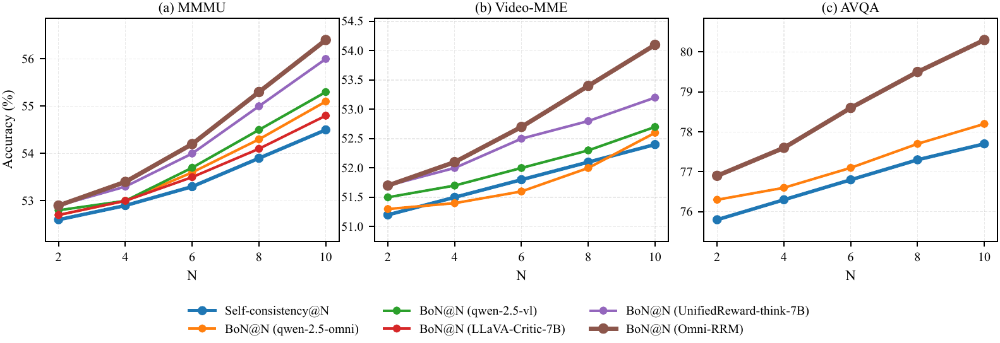
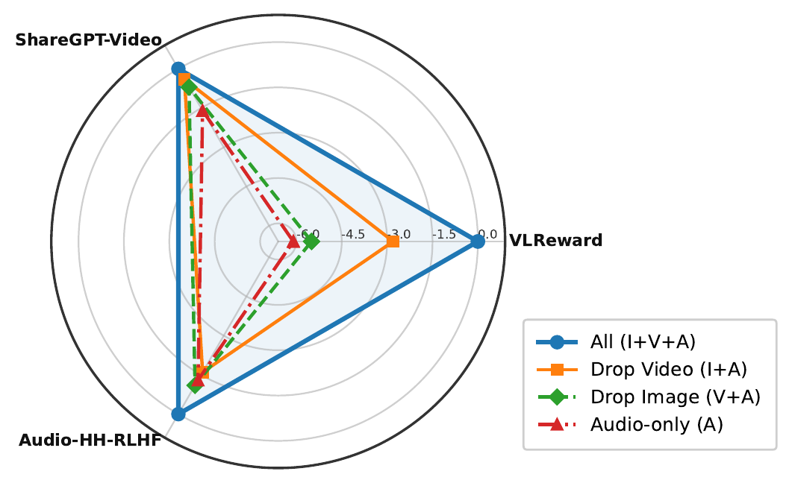
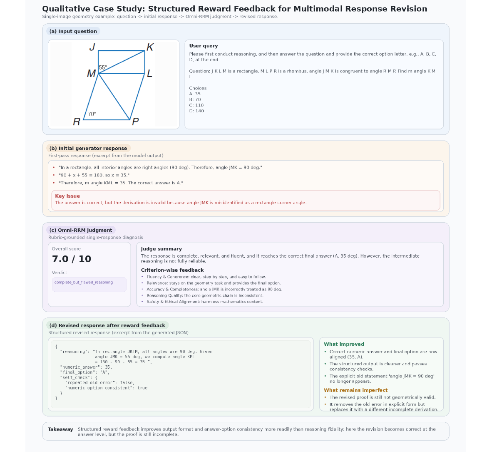

Abstract
Multimodal large language models still face brittle alignment because many reward models are vision-centric, dependent on expensive human labels, and reduced to opaque scalar scores. Omni-RRM addresses this gap with an omni-modal, rubric-grounded reward model that generates structured multi-dimensional reward signals across text, image, video, and audio.
We introduce Omni-Preference, a high-quality dataset constructed via automatic rubric-grounded preference synthesis. Teacher models reconcile raw preferences into explicit justifications, and Omni-RRM is trained with a progressive SFT plus GRPO regimen to sharpen discrimination on low-margin preference pairs. Omni-RRM-7B reaches 70.4% five-benchmark overall accuracy, including 80.2% on ShareGPT-Video and 66.8% on Audio-HH-RLHF.
Highlights
Method Overview
Step 1: Omni-Preference Construction
Candidate response pairs are produced with capability-contrast sampling. Strong and weak multimodal generators answer the same image, video, or audio-conditioned prompt, creating diverse preference candidates without relying on manual labels.
Two heterogeneous teacher models then annotate each pair with scores, a categorical verdict, and five-criterion comparative rationales. We retain pairs only when teachers agree on a non-tie verdict and the score ordering is logically consistent.
Step 2: Rubric-Grounded Reward Records
Omni-RRM does not output only a scalar reward. It emits an
auditable record containing score_A,
score_B, better, a reasoning field,
and a redundant final_verdict for robust parsing.
{
"score_A": 8,
"score_B": 6,
"better": "A",
"reasoning": {
"fluency": "...",
"relevance": "...",
"accuracy": "...",
"reasoning": "...",
"safety": "..."
},
"final_verdict": "<answer>[[A]]</answer>"
}Step 3: Progressive SFT plus GRPO
The SFT stage teaches the model to follow the structured reward interface and generate coherent rubric-grounded rationales. The GRPO stage then optimizes a bounded composite reward over schema validity, preference correctness, score-verdict consistency, and rubric coverage.
Main Results
Omni-RRM is evaluated on image, video, audio, and omni-modal preference benchmarks. The 7B SFT+RL model achieves strong open-source reward-modeling performance and closely matches a top-tier proprietary judge in overall accuracy.
| Model | VL-Reward | MM-RewardBench | ShareGPT-Video | Audio-HH | TA2T | Overall |
|---|---|---|---|---|---|---|
| Proprietary models | ||||||
| GPT-4o-mini | 59.8 | 61.9 | 53.9 | 58.2 | 57.9 | 58.3 |
| Doubao-1.5-Vision-Pro | 77.3 | 68.0 | 77.0 | - | - | - |
| Gemini-2.0-Flash | 73.4 | 62.8 | 74.6 | 60.1 | 59.9 | 66.2 |
| Gemini-2.5-Pro | 79.6 | 63.3 | 78.8 | 66.5 | 64.9 | 70.6 |
| Open-source MLLMs | ||||||
| Qwen2.5-Omni-3B | 53.7 | 53.9 | 58.1 | 58.7 | 47.9 | 54.5 |
| Qwen2.5-Omni-7B | 57.8 | 57.5 | 66.3 | 62.4 | 56.9 | 60.2 |
| Qwen2.5-VL-3B | 53.2 | 53.3 | 61.2 | - | - | - |
| Qwen2.5-VL-7B | 58.2 | 56.0 | 70.5 | - | - | - |
| Qwen2.5-VL-72B | 62.3 | 63.5 | 72.9 | - | - | - |
| Open-source reward models | ||||||
| LLaVA-Critic-7B | 54.1 | 56.0 | - | - | - | - |
| Skywork-VL-Reward-7B | 60.4 | 67.4 | 59.9 | - | - | - |
| UnifiedReward-think-7B | 66.6 | 71.4 | 77.8 | - | - | - |
| Omni-RewardModel-BT | 60.4 | 58.4 | 63.7 | 61.3 | 60.5 | 60.9 |
| R1-Reward-7B | 65.8 | 72.3 | 58.7 | - | - | - |
| Ours | ||||||
| Omni-RRM-3B SFT | 56.8 | 58.1 | 64.9 | 60.3 | 54.3 | 58.9 |
| Omni-RRM-7B SFT | 60.4 | 61.0 | 70.5 | 62.8 | 58.5 | 62.6 |
| Omni-RRM-3B SFT+RL | 58.5 | 68.9 | 67.4 | 65.1 | 61.1 | 64.2 |
| Omni-RRM-7B SFT+RL | 67.1 | 72.9 | 80.2 | 66.8 | 65.0 | 70.4 |
Accuracy (%) on multimodal preference benchmarks. Overall is the mean over the five benchmark columns when all are evaluated.
Additional Analyses
Best-of-N Inference-Time Alignment

Omni-Modal Transfer

Qualitative Case Study
Omni-RRM can also serve as structured feedback. In the example below, a generator reaches the correct answer option but relies on an invalid derivation. The reward judgment identifies the issue and supports a cleaner revised response.

Resources
BibTeX
@article{kong2026omnirrm,
title={Omni-RRM: Advancing Omni Reward Modeling via Automatic Rubric-Grounded Preference Synthesis},
author={Kong, Zicheng and Ma, Dehua and Xu, Zhenbo and Yang, Alven and Ru, Yiwei and Wang, Haoran and Zhou, Zixuan and Bie, Fuqing and Xiang, Liuyu and Wu, Huijia and Zhao, Jian and He, Zhaofeng},
journal={arXiv preprint arXiv:2602.00846},
year={2026}
}